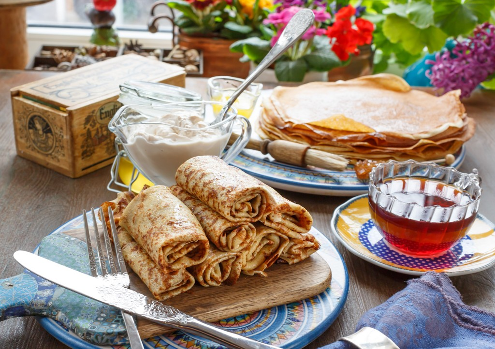

100 г муки, 100 мл молока, 3 яйца, 200 г яблок, соль, сахар, растительное масло, сахарная пудра по вкусу.
Яйца взбить, добавив соль, сахар, молоко. Муку просеять, замесить тесто, постепенно добавляя в нее натертые на крупной терке очищенные яблоки. На сковороде с разогретым растительным маслом испечь блины, равномерно распределяя тесто по всей сковороде. Готовые блины сложить пополам или вчетверо, снять со сковороды, посыпать сахарной пудрой.
200 г муки, 400 мл молока, 8 яиц, 4 ст. ложки сахара, 4 зеленых яблока, 100 г сливочного масла, 100 мл растительного масла, 4 ст. ложки меда, 1 ч. ложка молотой корицы.
Замесить жидкое тесто для блинчиков: взбить яйца с сахаром, добавить молоко и муку. Тщательно вымесить тесто, чтобы не было комков. Добавить растительное масло. Выпекать тонкие блинчики. Для фарша яблоки очистить от кожуры и сердцевины, нарезать тонкой соломкой и, помешивая, обжаривать в сливочном масле в течение 2–3 минут. Добавить мед и корицу, перемешать.
Снять с огня и выложить в дуршлаг. Охладить, сок сохранить. Блинчики разрезать на четыре части, на середину каждой положить яблочный фарш, свернуть рулетиками и подавать, полив соком от фарша.
100 г овсяных хлопьев, 100 г пшеничной муки, 150 мл молока, 200 мл сливок, 2 яйца, 6 яблок, 1 лимон, / пакетика дрожжей, 3 ст. ложки сахара.
Для глазури: 50 г сливочного масла, 4 ст. ложки кальвадоса.
Яблоки очистить от кожуры, удалить сердцевину. Два из них нарезать мелкими кубиками, обжарить их в 20 г сливочного масла. Остальные нарезать дольками и полить соком лимона. Овсяные хлопья смолоть в кофемолке в муку. Смешать с мукой, дрожжами, желтками яиц и молоком. Добавить сахарную пудру и кубики яблок. Белки взбить и ввести в тесто. Взбить сливки, добавив сахар для глазирования. Выпекать блинчики на среднем огне на сливочном масле.
Дольки яблок поджарить до золотистого цвета в оставшемся сливочном масле, влить в сковороду кальвадос и фламбировать. Вылить фламбе на блины, украсить их взбитыми сливками.
100 г муки, 200 мл молока, 2 яйца, 2 ст. ложки сахара, 4–5 яблок, 1 ст. ложка сливочного масла, 100 мл растительного масла, соль по вкусу.
Растереть яйца с сахаром, сливочным маслом, добавить молоко, соль и такое количество муки, чтобы получилось густое тесто, как сметана. Яблоки очистить от кожицы, удалить сердцевину, нарезать кружочками толщиной 1 см, кружочки яблок смочить в тесте и поджарить во фритюре. Подать теплыми, посыпав сахаром.
300 г муки, 600 мл молока, 2 яйца, 1 ст. ложка сахара, растительное масло для смазывания сковороды, соль по вкусу.
Для припека: 100 г слабосоленой красной рыбы (горбуша, форель, семга), 100 г китайского салата.
Смешать молоко, яйца, сахар, соль и муку до образования жидкой однородной массы без комочков. Тесто налить на смазанную маслом сковороду и на жидкое тесто положить смесь мелко нарезанной рыбы и китайского салата. Перевернуть и запечь блинчик с другой стороны.
1 стакан муки, 500 мл молока, 1–2 яйца, 50 г сливочного масла, / ч. ложки соды, 1 ст. ложка сахара, топленое масло для смазывания сковороды, соль по вкусу.
Для припека: 2 яблока, / стакана клюквы.
Муку всыпать в кастрюлю, развести чуть теплым молоком, добавить яйца, сахар, соль, соду, растопленное сливочное масло, хорошо перемешать. Яблоки очистить от кожуры и сердцевины, нарезать тонкими ломтиками. Тесто налить на смазанную топленым маслом сковороду и на жидкое тесто положить смесь нарезанных яблок и клюквы. Перевернуть и запечь блинчик с другой стороны. Подавать на стол, посыпав сахарной пудрой.
1 стакан пшеничной муки, 500 мл молока, 3 яйца, 50 г сливочного масла, 50 мл растительного масла, 1 ст. ложку сахара, /ч. ложка соли.
Для припека: 1 пучок зеленого лука, 2 яйца.
Смешать молоко, яйца, сахар, соль и муку до образования жидкой однородной массы без комочков (это можно сделать с помощью миксера). Добавить растительное масло и размешать. Тесто наливать на сковороду и, пока оно не «схватилось», прямо на жидкое тесто выложить смесь мелко нарезанного зеленого лука и яиц. Перевернуть и запечь блинчик с другой стороны. Смазать готовый блинчик сливочным маслом. Яйца отварить вкрутую, очистить, мелко порезать. Лук очистить, вымыть, тонко нарезать. Перемешать яйца с луком и солью. Желтки соединить со 100 мл молока, смешать, всыпать, помешивая, муку, добавить соль, сахар, растопленное сливочное масло, влить оставшееся молоко, положить взбитые в густую пену белки и хорошо перемешать. Тесто налить на смазанную сливочным маслом сковороду и на жидкое тесто положить смесь из яиц с зеленым луком. Перевернуть и запечь блинчик с другой стороны.